随着接触越来越多的寄存器, 这篇文章在未来会更新, S-mode的一些寄存器功能与M-mode中差不多名字的寄存器功能类似, 因此只截了图, 网站好像不支持markdown的目录结构,因此要找对应的寄存器说明可以直接网页Ctrl+F查找名字就好了
名词
- WARL: (Write any value, read legal value) (写任何值,读合法值)
- WLRL: (Write/read only legal value) (读写合法值)
- WPRL: (Reserved writes preseve values, reads ignore value) (将来可能会用到)
CSR寄存器快速一览(M-mode与S-mode)


M-mode CSR寄存器
Machine ISA Register (misa)

MXL(Machine XLEN): 代表了XLEN的大小, 对应关系为:
MXL XLEN 1 32 2 64 3 128 剩下的Extensions每个bit代表的意思为(感觉有点深了,就放个图吧):

Machine Status Registers (mstatus and mstatush)


- 对于RV32,除开mstatus寄存器还有mstatush寄存器作为拓展
- RV32相比RV64,少了两个字段: SXL[1:0] 以及 UXL[1:0]
各个字段含义(~代表与上方相同,注意要替换对应的特权模式,-代表暂无):
| 字段名称 | bit | 全称(*代表不确定) | 功能 | 特权模式 | 补充 |
|---|---|---|---|---|---|
| SIE | 1 | Supervisor Interrupt Enable | 全局中断启动位 | S | - |
| MIE | 3 | Machine Interrupt Enable | ~ | M | - |
| SPIE | 5 | Supervisor Previous Interrupt Enable* | 在trap之前的中断状态 | S | 进入中断前的SIE值,用于使用sret时再次赋给SIE |
| MPIE | 7 | Machine Previous Interrupt Enable * | ~ | M | 进入中断前的MIE值,用于使用sret时再次赋给MIE |
| SPP | 8 | Supervisor Previous Privilege | 进入trap之前的特权模式 | S | 0->U-mode, 1-> Other mode |
| MPP | [12:11] | Machine Previous Privilege | ~ | M | 设置为对应的特权值 |
| SXL | [35:34] | Supervisor XLEN | 控制XLEN的值,具体可以参考之前的MXL | S | RV64中值为0的时候代表不支持S-mode |
| UXL | [33:32] | User XLEN | ~ | U | ~ |
| MPRV | 17 | Modify PRiVilege | loads和stores指令执行时的特权模式 | - | 0 -> loads和stores正常执行 1 -> loads和stores是翻译且被保护的,当前的特权模式被设置到MPP中 如果不支持U-mode则为只读0, 执行mret或sret将特权模式设为了低于M的则会设MPRV=0 |
| MXR | 19 | Make eXecutable Readable | loads虚拟内存时的特权模式 | - | 0 -> 只能loads标记为可读的页面(R=1) 1 -> 可以loads标记为刻度或可执行的页面(R=1/X=1) 如果虚拟内存无效则MXR无作用, 如果不支持S-mode,则MXR设为只读0 |
| SUM | 18 | permit Supervisor User Memory access | 用于保护U-mode内存不被S-mode访问(看补充说明吧) | - | 0 -> S-mode下访问U-mode可以访问的内存页会出错(还是说生成一个page fault?不太确定) 1-> S-mode可以访问U-mode内存页 如果虚拟内存无效或者不执行在S-mode, SUM没用, 当MPRV=1, MPP=S时SUM有用 |
| MBE | 37/5 | Machine Big Endian* | 记录M-mode是否为大小端 0 -> 小端 1 -> 大端 |
M | 描述对应的模式下加载存储内存是大端还是小端(取指令总是小端) |
| SBE | 36/4 | Supervisor Big Endian* | ~ | S | ~ |
| UBE | 6 | User Big Endian* | ~ | U | ~ |
| TVM | 20 | Trap Virtual Memory | 拦截S-mode 虚拟内存管理操作 | - | 1 -> 读取写入 satp CSR 或者执行 SFENCE.VMA 或者 SINVAL.VMA 指令并且在S-mode会引发非法指令异常 0 -> 允许执行 |
| TW | 21 | Timeout Wait | 拦截 WFI 指令 | - | 0 -> WFI 指令允许在低特权模式中执行(可能因为其他原因阻止执行) 1 -> WFI 指令如果在低特权模式中执行并且没有在特定时间内执行完成, 就会引发一个非法指令异常 |
| TSR | 22 | Trap SRET | 拦截 SRET 指令 | - | 1 -> 尝试在S-mode中执行 SRET指令会引发非法指令异常 0 -> 允许使用SRET |
| FS | [14:13] | Floating Status* | 浮点单元的状态 | - | 包括寄存器 f0-f31,以及fcsr, frm, fflags CSRs |
| VS | [10:9] | Vector Status* | 向量扩展状态 | - | 包括寄存器 v0-v31, 以及 vcsr, vxrm, vxsat, vstart, vl, vtype, vlenb CSRs |
| XS | [16:15] | - | 额外U-mode以及对应的状态(?) | - | - |
| SD | 63/31 | - | 只读位, 表示FS, XS, VS的总体状态 | - | 运算方式: SD=((FS==11) OR (XS==11) OR (VS==11)) |
补充:
- 大小端:

- FS, VS, XS 代表的意思:


- SV39:

- 所有拦截目标特权模式的位,如果不支持目标特权模式,则始终为只读0
Machine Trap-Vector Base-Address Register (mtvec)
用于保存处理trap的入口函数地址


Machine Trap Delegation Registers (medeleg and mideleg)
- medeleg全称: Machine Exception DELEGate
- mideleg全称: Machine Interrupt DELEGate
通过全称可以看到,一个是用于异常的代理,一个是用于中断的代理,在手册中它们的具体值分别是
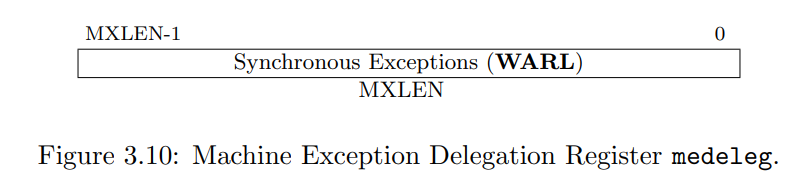
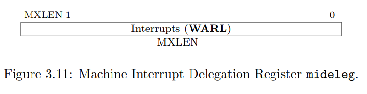
具体使用规则很简单, 设置一些特定的中断/异常对应的位, 之后如果在S-mode或者U-mode发生的中断/异常会进入到S-mode的trap handler, 如果trap代理到了S-mode, 会有以下寄存器操作:
- scause会写入发生trap的类型
- sepc会写入发生trap的那个指令虚拟地址
- stval会写入特定的数据
- mstatus中的SPP位会写入trap前的特权模式
- mstatus中的SPIE会写入trap前的SIE位的值,用于返回时恢复
- mstatus中的SIE会置0
- mcause,mepc,mtval以及mstatus中的MPP,MPIE不会写入东西
具体哪一位对应哪一个中断/异常,可见下面mcause中的表格, Interrupt对应mideleg, Exception对应medeleg, code对应哪一位,比如在 Interrupt中的Supervisor software interrupt, 在 mideleg对应的是从右向左第二位(从0开始)
Machine Interrupt Registers (mip and mie)
mie,mip分别是MXLEN长度的寄存器:
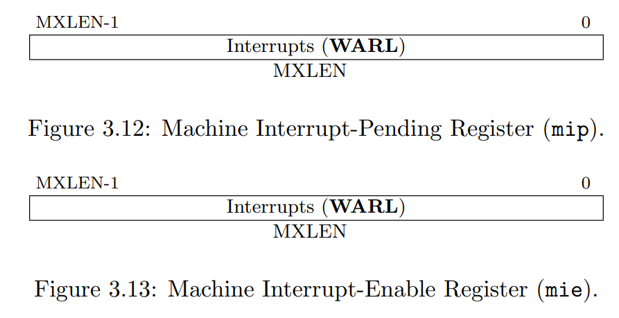
先来说说一个中断想要进入M-mode需要满足什么条件:
- 当前特权模式为M并且mstatus寄存器的MIE位被设置, 或者当前特权模式等级低于M-mode
- mip和mie对应的bit同时被设置
- 如果mideleg存在,则对应的bit不能被设置
mip与mie每一位对应的中断类型:
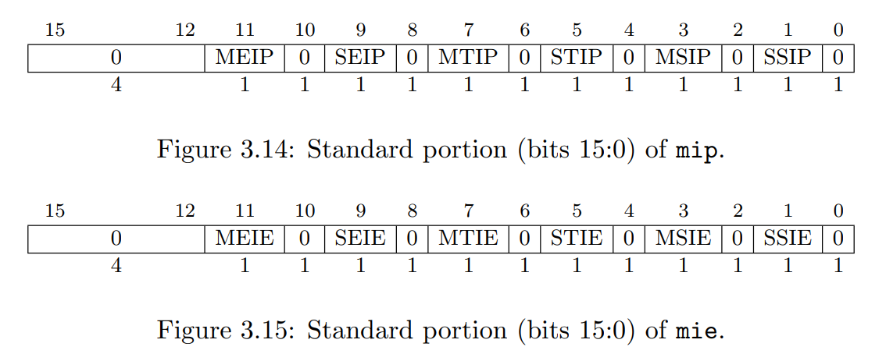
寄存器mip中的每位可以是可写的，也可以是只读的。当mip中的第i位可写时，一个挂起的中断i可以将bit i置0。如果interrupt i可以变成挂起态，但是mip中的bit i是只读的，那么实现必须提供一些其他机制来清除挂起的中断。
各个比特位所代表的意思:
| bit名 | 说明 | 补充 |
|---|---|---|
| mip.MEIP及mie.MEIE | 机器级外部中断挂起和机器级外部中断启用 | MEIP为只读, 只能通过特定的平台终端管理器设置或清除 |
| mie.MTIP及mie.MTIE | 机器级时钟中断挂起和机器级时钟中断启用 | MTIP为只读,只能通过写入内存映射的M-mode 时钟比较寄存器(timer compare register)来清除 |
| mie.MSIP及mie.MSIE | 机器级软件中断挂起和机器级软件中断启用 | MSIP为只读,只能通过访问内存映射的控制寄存器来写入, 控制寄存器被远程harts用来提供机器级处理器间的中断, 一个hart可以相同的内存映射控制寄存器来写入他自己的MSIP bit.如果一个系统只有一个hart或者一个平台标准支持通过外部中断(MEI)来传递机器级处理期间的中断, 则 MSIP和MSIE可能都设为只读0 |
| mip.SEIP及mie.SEIE | Supervisor-level 外部中断挂起和Supervisor-level 外部中断启用 | SEIP是可写的, 可能会被M-mode软件去通知S-mode有一个外部中断正在挂起, 平台中断控制器可能也会生成Supervisor level 外部中断 Supervisor level外部中断是否挂起是基于这个表达式: (软件可写的SEIP bit) | (外部中断控制器信号). 当使用CSR指令读取mip时, SEIP bit 返回的值为:(软件可写的bit) | (外部中断控制器信号), 但是外部中断信号并不用于计算写入到SEIP寄存器的值(也就是说外部中断信号与SEIP寄存器中的值没有关联, 但读取的时候会加上这个信号, 读取的不一定是实际在寄存器中的) 能通过用 CSRRS 或者 CSRRC来读取更改或者写入实际SEIP的值 |
| mip.STIP及mie.STIE | Supervisor-level 时钟中断挂起和Supervisor-level 时钟中断启用 | STIP是可写的，可通过M-mode的软件传递timer中断到S-mode |
| mip.SSIP及mie.SSIE | Supervisor-level 软件中断挂起和Supervisor-level 软件中断启用 | SSIP是可写的，可以通过特定的平台中断控制器设置为1 |
Hardware Performance Monitor (HPM)
M-mode包含一系列基础的硬件性能监控设备, mcycle CSR寄存器记录着一个hart运行时他所在的处理器核执行的clock cycles. minstret CSR寄存器记录一个hart已经执行的指令数量. 这两个寄存器无论是在RV32还是RV64都是64位的.
计数寄存器在hart重置后是一个随机值, 可以被写入一个特定的值, CSR写入在写入指令结束后生效(意思应该是当前指令不计算在重置后的值). mcycle CSR可能会被多个hart共享, 因为有一些核会有超线程技术, 比如一核二线程, 这种时候平台需要提供一个机制去定义哪些harts共享一个mcycle CSR.
硬件性能监控器包含29个额外的64位事件计数器, mhpmcounter3-mhpmcounter31. 还存在一系列用于选择事件的 CSR寄存器, mhpmevent3-mhpmevent31, 他们都是MXLEN bit大小的WARL寄存器, 用于控制拿一些事件会导致计数器增长, 这些事件的内容由平台定义, 但是event 0 定义为 “没有事件”. 所有的计数器都要被实现, 但存在一种合法的实现, 就是将counter和对应的event select 设置为只读0
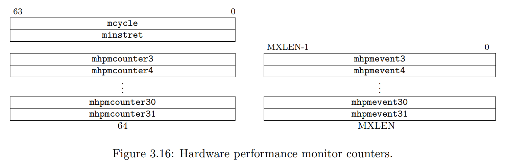
如果MXLEN=32, 直接读寄存器会读取到0-31位的数据, 在对应的寄存器后面加个h即可读取32-63位的数据.
内存映射寄存器 - Machine Time Registers (mtime 及 mtimecmp)
该寄存器记录的是现实生活中时间, 暴露为内存映射 M-mode 读写寄存器 mtime, mtime需要以固定的频率递进, 平台需要提供一个方法去定义一个mtime tick的周期, 如果mtime寄存器溢出,则会重置为0(原话:The mtime register will wrap around if the count overflows.)
mtime在RV32和RV64中都以64位的精度存在, 平台提供了一个64位大小的内存映射M-mode 时间对比寄存器(mtimecmp). 如果mtime的值大于mtimecmp, 则一个machine timer interrupt会挂起(寄存器的值被设定为无符号整型). 中断会一直存在知道mtimecmp大于mtime. 这个中断是否发生同时也要看mie CSR寄存器中的MTIE bit是否设置为1.
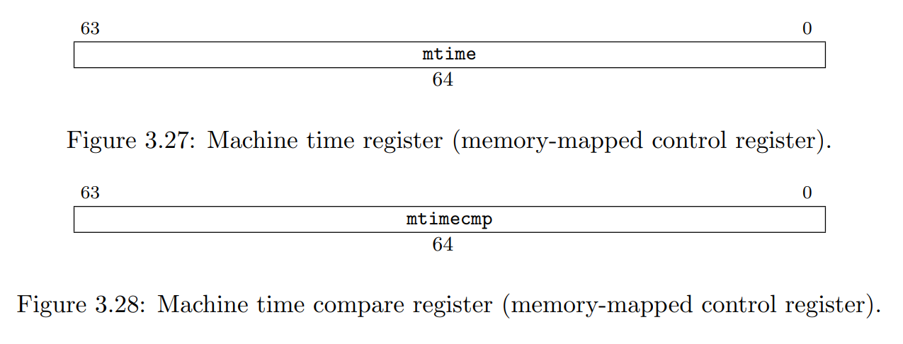
Machine Counter-Enable Register (mcounteren)
这个寄存器主要是保护上面说的HPM不被S-mode以及U-mode访问, 寄存器的结构如下:
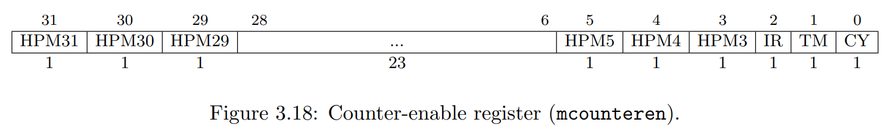
如果HPM对应的bit为1, 则代表mcycle, minstret…可以被S-mode, U-mode访问, 如果为0则代表不能被访问, 如果S-mode, U-mode访问了, 则会将引发非法指令异常
Machine Counter-Inhibit CSR (mcountinhibit)
这个寄存器控制HPM的增长, 结构和mcounteren类似(注意TM位没有了):
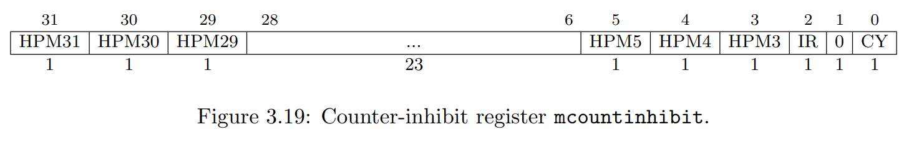
- 如果对应的位为0, 则代表对应的计数器可以增长, 如果为1则代表对应的计数器不会增长, 这个寄存器不会影响HPM的可访问性.
- mcycle CSR可以在多个hart间共享. 同理, CY字段也应该在这些hart之间共享.
- 如果未实现该寄存器, 则功能与全为0相同
- 如果不需要cycle和instret计数器时, 最好可以将他们关掉以减少能量消耗
- 由于时间计数器在多核是共享的, 因此它不能被此寄存器影响.
Machine Scratch Register (mscratch)
用于保存M-mode的hart本地上下文空间的指针, 在进入M-mode trap handler时与user寄存器交换

Machine Exception Program Counter (mepc)
当进入M-mode trap handler时用于记录进入之前运行指令的虚拟地址

Machine Cause Register (mcause)
进入trap之前记录是因为什么引发的trap,如果是中断则会将最顶的那一位设为1

对应表格:

如果指令触发多个异常,则优先级如下:

Machine Trap Value Register (mtval)
进入M-mode trap之前, mtval要么设为0, 要么写入一些辅助处理trap的异常信息.

如果在断点(breakpoint), 地址错位(address-misaligned), 访问错误(access-fault) 或者 执行获取(fetch), 加载(load), 存储(store) 指令触发的page-fault 时 mtval写入了一个非0值,则代表发生错误的虚拟地址
剩下的什么错误mtval写入对应值具体看RISCV特权英文手册的3.1.16.
S-mode CSR寄存器
Supervisor Status Register (sstatus)

没怎么细看,但乍一看感觉这里面的每个bit mstatus都有..就先不记录了吧
Supervisor Trap Vector Base Address Register (stvec)

Supervisor Interrupt Registers (sip and sie)
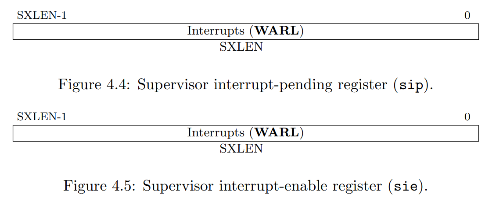
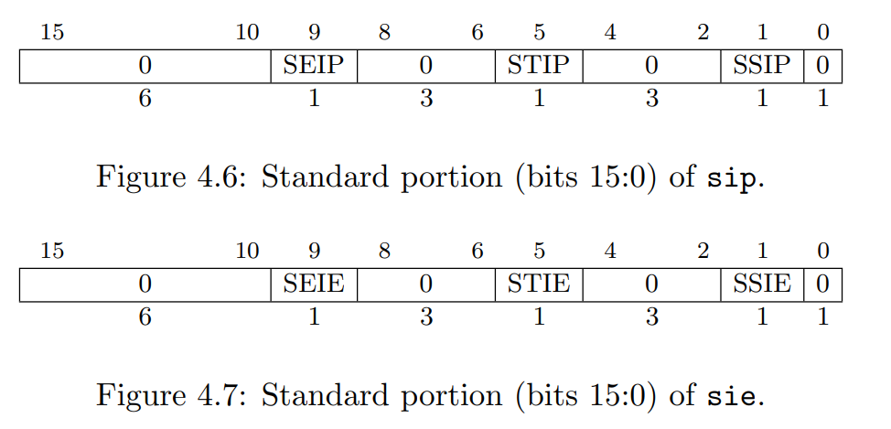
Counter-Enable Register (scounteren)
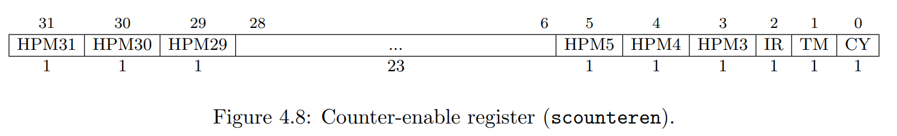
与mcounteren类似,这个寄存器控制U-mode对HPM的访问控制, 如果为0, 则U-mode访问会触发非法指令异常,如果为1则不会.
Supervisor Scratch Register (sscratch)

Supervisor Exception Program Counter (sepc)

Supervisor Cause Register (scause)

Supervisor Trap Value (stval) Register

Supervisor Address Translation and Protection (satp) Register


用于控制S-mode 地址翻译和保护, satp 中保存了根页表的PPN, ASID全称为 Address Space IDentifier, 目前知道的是可以用来唯一标识进程, 提供进程地址空间保护, MODE为地址转换的模式: